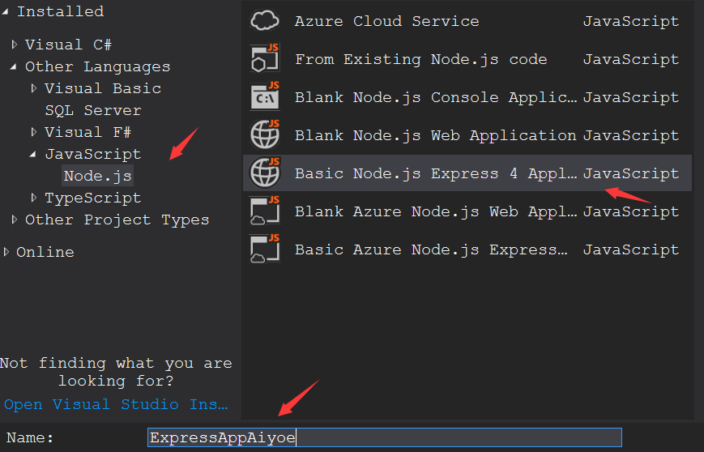
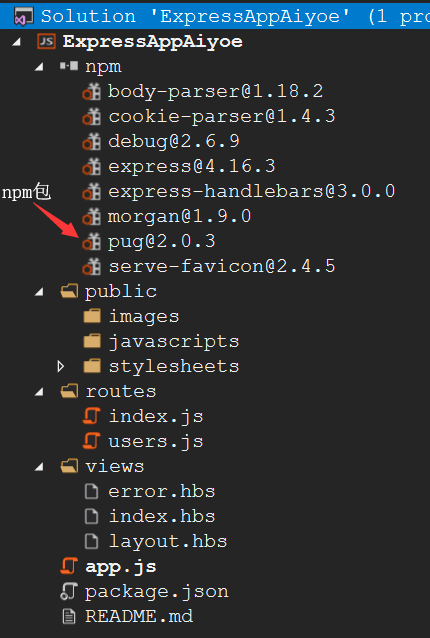
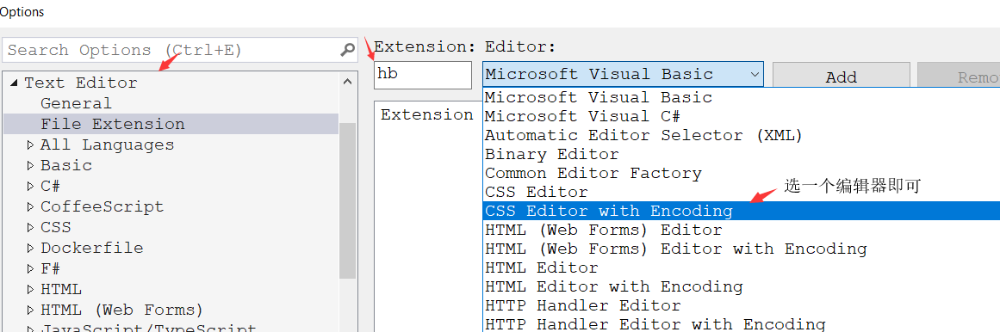
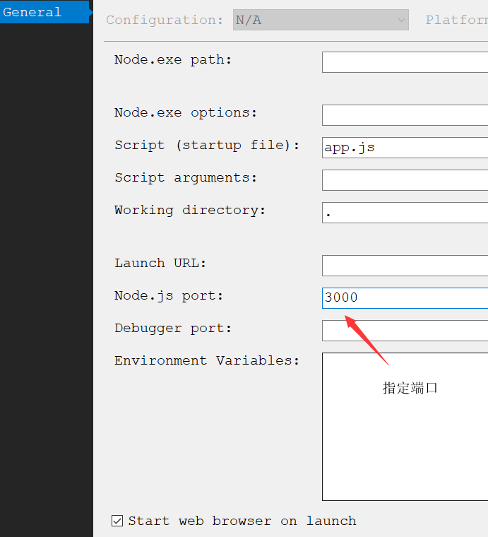

nodejs之旅(1)
这个系列会一步一步开始使用expressjs+nodejs搭建一个游戏背景音乐在线听网站。从零开始记录每一个细节：包括IDE工具使用细节、环境配置细节、expressjs 配置细节等等。目的只是为了单纯的练习和使用expressjs+nodejs，在摸索中前进！
准备工作
开发工具使用的是ms的visual studio 2017 有些暴殄天物 1. visual studio 2017 2. node.exe – version 8.5
创建一个basic-expressjs application
新建project,命名为expressappAiyoe。创建完毕后默认目录结构，如下图：  
当然也可以通过expressjs官网网站的express-generator命令行工具来生成需要的站点！
IDE方便在于不需要记住那么多的命令，使用鼠标搞定。
修改expressjs默认模板引擎pug
通过visual studio创建的expressjs项目默认使用的是pug的模板引擎，个人很不喜欢这种类型的模板引擎感觉非常的不直观。pug的前身是jade模板引擎。 在这里打算使用express-handlebars模板引擎，这个模板引擎是mustache模板engine的一个扩展，可以同时使用在browser-client客户端和web-server服务器端。 可供express使用的模板引擎还有express-ejs-layouts,看个人喜好。
在npm官网可以搜索到express-handlebars, 里面有详细的使用介绍，这里我们只需要把app.js里面相应的view engine代码替换掉并且将views目录下的文件后缀名改为handlebars即可，如下:
var express = require('express');
var exphbs = require('express-handlebars');
var app = express();
app.engine('handlebars', exphbs({defaultLayout: 'layout'}));
app.set('view engine', 'handlebars');
app.get('/', function (req, res) {
res.render('home');
});
app.listen(3000);
上面的代码会报错找不到views/layout/layout.handlebars文件。根据express-handlebars文档,设置如下：
//app.engine('handlebars', exphbs({defaultLayout: 'layout'}));
app.engine('handlebars', exphbs({defaultLayout: 'layout',layoutsDir:"views"}));
//The string path to the directory where the layout templates reside.
同时handlebars这样的后缀名文件太冗长了，我们需要更短一点的后缀名可以通过设置extname属性来实现。
app.engine('.hbs', exphbs({defaultLayout: 'layout',layoutsDir:"views",extname='.hbs'}));
app.set('view engine', '.hbs');
注意: extname的值必须与注册engine时call的app.engine(key,value)的
key保持一致！
文档英文原文如下：
This value should correspond with the extname under which this view engine is registered with Express when calling app.engine().
补充说明:visual studio针对特定后缀名的文件，使用什么样的编辑器打开就有不同的高亮提示，这个是可以定制的。[Tools]->[Options]->[Text Editor]-> [File Extension]，添加自定义的后缀名，选择对应的编辑器即可，如图： 
app.engine()的使用请参考Developing template engines for Express
expressappAiyoe端口问题
从代码可以看出倘若定义了process.env.PORT环境变量，就使用环境变量指定的端口没有就使用3000
app.set('port', process.env.PORT || 3000);
vsIDE默认通过工程文件指定了1337端口，可以通过右键项目文件->属性看到，如果把nodejs port这个值删除，通过F5启动的node.exe会随机给我们指定一个端口，
通过msbuild配置命令行的形式，设置了环境变量process.env.PORT。

启动网站
按F5启动网站！